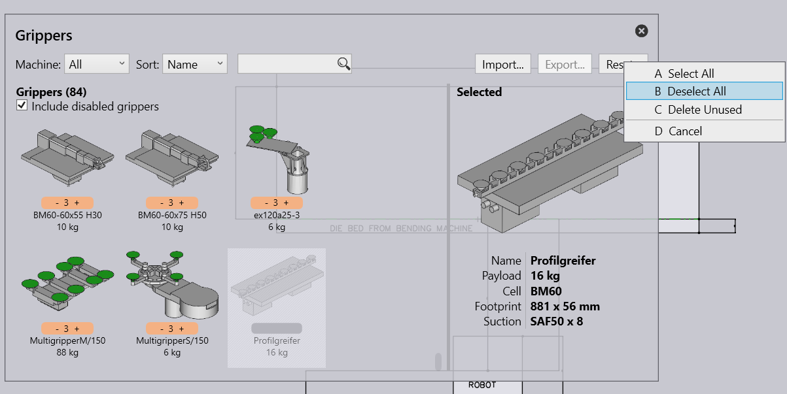

Gripper Inventory
A good gripper is often the key to a good bend sequence in FluxBend.
There are hundreds of different grippers available for use with the BendMaster. You can usually import these gripper models from ARV files, and you can configure the inventory of grippers so Flux knows the actual grippers you have on your shopfloor. A Flux installation comes with a set of commonly-used grippers already pre-installed, but this set can be edited.
Click on the Database icon and choose the Bend-Gripper Inventory option to open the Gripper Inventory panel.
This panel displays all the grippers that have been installed. From this set of all the installed grippers, some of them can be enabled for use. Only these enabled grippers will show up in the gripper selection lists, and only these will be used by Flux during computation.
-
You can use the Sort options to arrange the grippers by name, by size, etc.
-
Use the Import button here to import additional grippers from ARV files.
-
Use the Reset button to select, or de-select all the grippers, and to delete any unused grippers. Take care when you do this - if you do not have the ARV files, you cannot get back the original grippers.
In addition, you can also import grippers using the option from the Import menu:
|
Tip
|
To keep an overview of the grippers you could disable grippers by CTRL-click |

To delete a gripper permanently RIghtclick on the gripper and click on Reset, then select Delete unused to delete the gripper